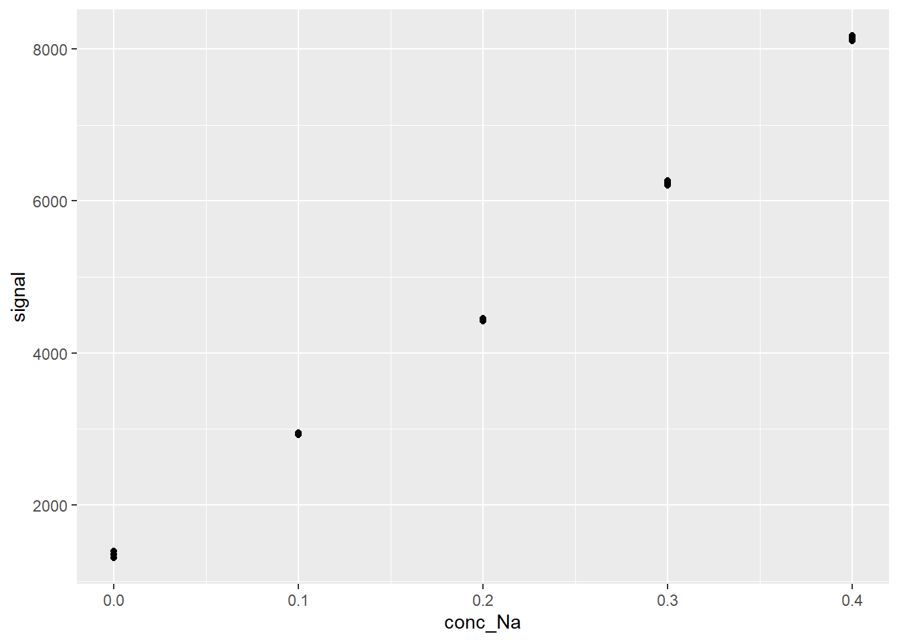
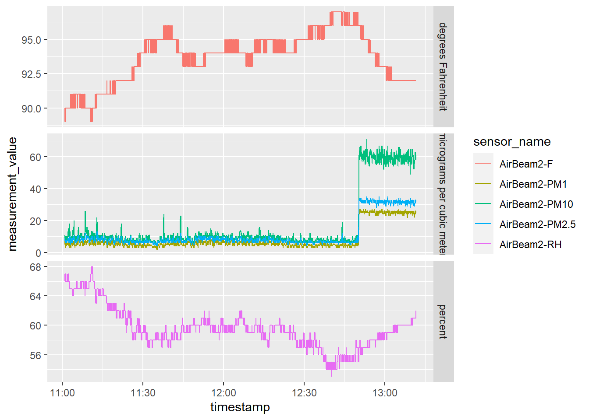

Chapter 2 Modelling
Modelling is basically math used to describe some type of system, and they are a forte of R, a language tailor made for statistical computing… Every model has assumptions, limitations, and all around tricky bits to working. We’ll discuss model fitting and break down popular models you’ll encounter in specific chapters in Section 3. For now, we’ll introduce the lm() function for generalized linear models.
Linear models are the trend lines you used all the way back in CHM135. However, if you’ve been exposed to these, it’s most likely via Excel’s ‘add trend line’ option. While lm() works much the same mathematically, unlike Excel, R returns allllll of the model outputs. Correspondingly, it’s easy to get lost between juggling R code, the seemingly endless model outputs, and keeping yourself grounded in the real systems you’re attempting to model.
So let’s take our lm() function at face value and learn how to model in R. Again we’ll touch up the details later on, but for now let’s import the FAES calibration results we saw in [Transform: dplyr and data manipulation]. As we’ve already seen, our data is composed of four standards and a blank analyzed in triplicate. Since we’re focusing on modelling, we’ll treat the blank as a standard in our model fitting:
# Importing using tips from Import chapter
FAES <- read_csv(file = "data/FAESdata.csv") %>%
pivot_longer(cols = -std_Na_conc,
names_to = "replicate",
names_prefix = "reading_",
values_to = "signal") %>%
separate(col = std_Na_conc,
into = c("type", "conc_Na", "units"),
sep = " ",
convert = TRUE) %>%
mutate(type = "standard")
DT::datatable(FAES)ggplot(data = FAES,
aes(x = conc_Na,
y = signal)) +
geom_point()
Note model is a general term, in this situation we’ll be calculating a calibration curve. All calibration curves are models, but not all models are calibration curves.
2.1 Base R Linear Model
R’s base lm() function for linear regression is excellent, but it’s outputs have some messy quirks. It’s easier to show that, so let’s calculate the linear relationship between the signal as a function of conc_Na:
lm_fit <- lm(signal ~ conc_Na, data = FAES)
lm_fit##
## Call:
## lm(formula = signal ~ conc_Na, data = FAES)
##
## Coefficients:
## (Intercept) conc_Na
## 1243 16885Reading the code above (recall that we’re reading it from right to left because it’s base R):
- We’re taking the FAES data we created earlier;
data = FAES - We’re comparing
signal(the dependent, y, variable) toconc_Na(the independent, x, variable) via the tilde~. The way to read this is: “Signal depends on concentration”. - We’re comparing these two variables using the
lm()function for generalized linear models. - All of the model outputs are stored in the
lm_fitvariable.
As we can see, the model outputs are pretty brief and not much more than Excel’s outputs. We can use summary() to extract more information to better understand our model:
summary(lm_fit)##
## Call:
## lm(formula = signal ~ conc_Na, data = FAES)
##
## Residuals:
## Min 1Q Median 3Q Max
## -203.091 -86.731 -3.761 107.837 176.562
##
## Coefficients:
## Estimate Std. Error t value Pr(>|t|)
## (Intercept) 1242.57 58.05 21.41 1.61e-11 ***
## conc_Na 16884.82 236.98 71.25 < 2e-16 ***
## ---
## Signif. codes: 0 '***' 0.001 '**' 0.01 '*' 0.05 '.' 0.1 ' ' 1
##
## Residual standard error: 129.8 on 13 degrees of freedom
## Multiple R-squared: 0.9974, Adjusted R-squared: 0.9972
## F-statistic: 5077 on 1 and 13 DF, p-value: < 2.2e-16Now we have a lot more information from our model (don’t worry about what everything means, it’s discussed further in Section 3. For now, understand that it’s a hot mess.
2.2 Cleaning up model ouputs
summary() provides a decent overview of our model’s performance, but the outputs are difficult to work with. Let’s turn to the broom() package to clean up our model outputs.
library(broom)
calCurve <- FAES %>%
group_by(type) %>%
nest() %>%
mutate(fit = map(data, ~lm(signal ~ conc_Na, data = .x)),
tidied = map(fit, tidy),
glanced = map(fit, glance)
)
calCurve## # A tibble: 1 x 5
## # Groups: type [1]
## type data fit tidied glanced
## <chr> <list> <list> <list> <list>
## 1 standard <tibble [15 x 4]> <lm> <tibble [2 x 5]> <tibble [1 x 12]>Things look a bit more complicated than our earlier example, so let’s break down our code line by line:
- We’re taking the
FAESdataset that we created earlier. group_by(type)groups all rows bytype, in this situation we have only one type:standard.nest()collapses everything other than thetypecolumn into smaller dataframes. In this situation, all other information is stored as atibbleunder thedatacolumn; this is the data used to calculate the linear model.- Withing the
mutatefunction, we’ve created three columns:fit,tidiedandglanced.
And it’s the the fit, tidied and glanced that contains out cleaned up model outputs. fit contains the raw output from the linear regression model for signal as a function of conc_Na using the lm() function. The output is in the form of a list, similar to what summary() gave us above. Again, this is exceptionally messy, hence why we used the tidy(), and glance() function from the broom package . map() just means we’re applying the function tidy() to the individual output list created by lm() and stored in the fit column. Note that the tidy() and glanced() outputs are tibbles. So we now have a tibble containing specific model output values (i.e. (Intercept)), lists (i.e. fit), and tibbles (tidied). This is known as **nested data*. We’re no longer in Kansas anymore…
Anyways, let’s take a look at our model results. The glanced tibble contains “…a concise one-row summary of the model. This typically contains values such as R^2, adjusted R^2, and residual standard error that are computed once for the entire mode”1 Because the data is nested, we’ll need to use unnest() to flatten it back out into regular columns:
calCurve %>%
unnest(glanced)## # A tibble: 1 x 16
## # Groups: type [1]
## type data fit tidied r.squared adj.r.squared sigma statistic p.value
## <chr> <list> <lis> <list> <dbl> <dbl> <dbl> <dbl> <dbl>
## 1 stand~ <tibble~ <lm> <tibbl~ 0.997 0.997 130. 5077. 3.05e-18
## # ... with 7 more variables: df <dbl>, logLik <dbl>, AIC <dbl>, BIC <dbl>,
## # deviance <dbl>, df.residual <int>, nobs <int>What you see here is a bit more than what you’d get from Excel’s ‘line-of-best fit’ output. See the section on Modelling for a better breakdown of what everything means. But for now, we can see that our r.squared of each calibration curve is pretty good, and the p.value indicates each model is significant. the adj.r.squared is the same as r.squared in this situation. This is because r.squared will always increase if we add more exploratory variables to our model; the adj.r.squared accounts for the number of exploratory variables used in the model. However, in our case we only have one exploratory variable, hence they’re the same.
But what about the slope and the intercept? After all, that’s what we need to calculate the concentration in our unknowns. Let’s take a look at tidied from the tidy() function “…which constructs a tibble that summarizes the model’s statistical findings. This includes coefficients and p-values for each term in a regression…”2
# storing because we'll use it later on.
tidied <- calCurve %>%
unnest(tidied)
tidied## # A tibble: 2 x 9
## # Groups: type [1]
## type data fit term estimate std.error statistic p.value glanced
## <chr> <list> <list> <chr> <dbl> <dbl> <dbl> <dbl> <list>
## 1 stand~ <tibble ~ <lm> (Inte~ 1243. 58.0 21.4 1.61e-11 <tibble ~
## 2 stand~ <tibble ~ <lm> conc_~ 16885. 237. 71.3 3.05e-18 <tibble ~Again, a lot more to unpack compared to Excel. That’s because the lm() function in R calculates a generalized linear model. lm() performs a linear regression model, which we normally think of as an equation of the form \(y= mx+b\). But, regression models can be expanded to account for multiple variables (hence multiple linear regression) of the form
\[y = \beta _{0} + \beta _{1} x_{1} + \beta _{2} x_{2} ... \beta _{p} x_{p}\]]
where,
- \(y\) = dependent variable
- \(x\) = exploratory variable; there’s no limit how many you can input
- \(\Beta _{0}\) = y-intercept (constant term)
- \(\Beta _{p}\) = slope coefficient for each explanatory variable
In our situation, we only have one input variable for our model (conc), so the above formula collapses down to \(y = \beta _{0} + \beta _{1} x_{1}\). So looking at our results above, each row corresponds to a model parameter. For each modelling parameter, we’re provided an estimate of it’s numerical value (estimate, the values we’ll use to calculate concentration). The other parameters are useful to understand but not necessary at this point (again, check out the Modelling section).
And we can extract these values to use in subsequent calculations:
intercept <- as.numeric(tidied[1,5])
slope <- as.numeric(tidied[2,5])
paste("The equation of our calibration curve is: y = ", slope, "x + ", intercept, sep="")## [1] "The equation of our calibration curve is: y = 16884.8167x + 1242.56646666666"2.2.1 Why we approach modelling this way
You may be wondering why we’ve seemingly overcomplicated a simple enough procedure. Fair enough, we’ve showcased an analysis with a simple data set. However, as you progress in your studies you’ll be quantifying many compounds, often at the same time in the same instrument runs. If you organize your data in a tidy format, you can plot calibration curves for all of your compounds with the same block of code. Essentially you use group_by() to group your data by compound/element. Subsequently, the same code is expandable from 1 compound to as many as you can ever hope to quantify in one shot. So for upper year labs where you’re analyzing tens of compounds (cough CHM410 Dust Lab) you can generate calibration curves for all your compounds at once.
2.3 Visualizing model
At the top of the chapter we plotted out standards to visualize a linear trend. Visualizations is an essential component when calculating calibration curves, and indeed our standards apepared to follow a linear trend, which was corroborated by the model we calculated above. However, for publications/reports you’ll need to create a plot with both your standards and model with the displayed equation, so below is a bit of stock code you can use as a starting point to create these plots. Note that it requires the ggpmisc package to display the equation:
ggplot(data = FAES,
aes(x = conc_Na,
y = signal)) +
geom_point() +
geom_smooth(method = 'lm', se=F) +
ggpmisc::stat_poly_eq(formula = y ~ x, # formula uses aesthetic names
rr.digits = 4, # reported digits of r-squared
aes(label = paste(..eq.label.., ..rr.label.., sep = "~~~")),
parse = TRUE, size = 3) ## `geom_smooth()` using formula 'y ~ x'
2.4 Further reading
The theory and use of these models are explored in greater details in Section 3. Please read up on it for an understanding of the model outputs and how to use them in your analysis. As well, see the section on modelling in R for Data Science.
https://www.newyorker.com/magazine/2021/06/21/when-graphs-are-a-matter-of-life-and-death